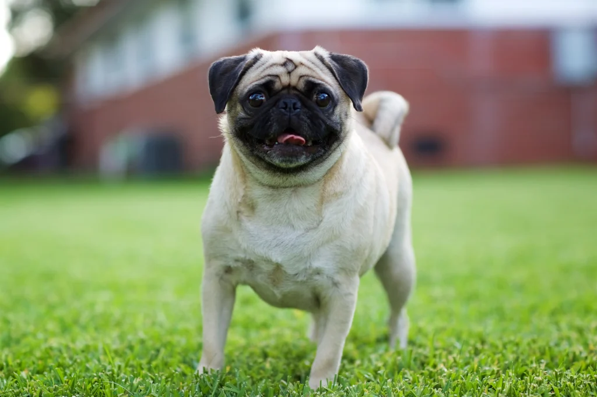

TODO: Transforme o texto "Voltar" abaixo em hiperlink que leva o usuário para a página com o sumário de todos os cachorros
Voltar
Pug é conhecido por ser bastante amável, tranquilo e apegado a seus tutores e tutoras. É uma excelente companhia, principalmente para quem está à procura de um cachorro para apartamento.